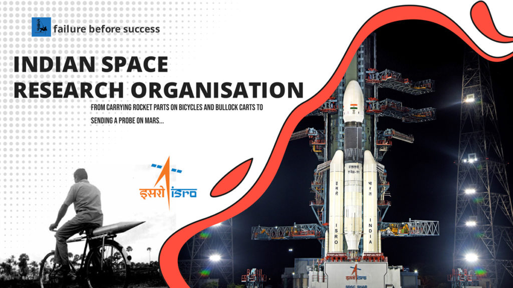

About Space Research
Space research involves the exploration and study of outer space through various means, including crewed and uncrewed spacecraft.
This field enhances our understanding of the universe, drives technological advancements, and provides insights into Earth's environment and the solar system.
Space research has evolved significantly since its inception, driven by a combination of scientific curiosity and practical applications.
It encompasses a wide range of activities, from launching satellites for communication and weather forecasting to sending robotic missions to distant planets and moons.
The pursuit of knowledge in this domain not only addresses fundamental questions about the cosmos but also leads to technological innovations that benefit life on Earth.
Moreover, international collaboration in space exploration fosters peaceful relations among nations and inspires future generations to engage in science and technology. As humanity continues to push the boundaries of space exploration,
the potential for discovering new resources and understanding our place in the universe remains a compelling motivation.

The Indian Space Research Organisation (ISRO) is India's national space agency, headquartered in Bengaluru, Karnataka.
Established on August 15, 1969, by Dr. Vikram Sarabhai, ISRO operates under the Department of Space, which is directly overseen by the Prime Minister of India.
Over the years, ISRO has achieved numerous milestones in space exploration and satellite technology. In 1975, it launched Aryabhata, India's first satellite.
The Chandrayaan-1 mission in 2008 discovered water molecules on the Moon, while the Mangalyaan mission in 2013 made India the first country to reach Mars on its first attempt.
In 2019, the Chandrayaan-2 mission aimed for a lunar landing but faced challenges. However, in 2023, ISRO successfully landed Chandrayaan-3 on the Moon's south pole, making India the first country to do so.
With ambitious projects like the Gaganyaan human spaceflight mission, ISRO continues to advance India's position in global space exploration.